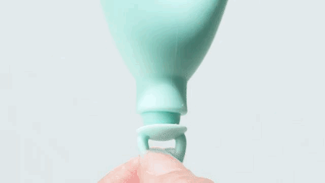

Reusable menstrual cup designed for freedom.
Engineered for comfort.
CozyLeaf is a patented, innovative reusable menstrual cup designed for comfort, flexibility, and sustainable period care—created to reduce the learning curve for first-time users.
A comfortable menstrual cup that feels right - sooner.
Featured by TV Tokyo for FemTech innovation.

Why Cozyleaf
CozyLeaf is a patented menstrual cup built on innovative design principles that prioritize comfort, stability, and ease of use—especially for beginners.
How Cozyleaf works
Learn how this menstrual cup seals comfortably, stays in place, and supports an easier routine from day one.
A different experience, by design.
New to menstrual cups? You're not the only one.
If you’re looking for a beginner-friendly period cup, Cozyleaf helps you feel comfortable faster with a simpler fit.
Reuse & impact
Reusable menstrual cups can reduce monthly waste and support sustainable period care—without sacrificing comfort.
Trust & Recognition
Quiet proof — simply stated.
Featured by TV Tokyo
for FemTech innovation.
Patented technology
Designed for comfort and confidence.
Medical-grade silicone
Body-safe and reusable.
Join the waitlist
Frequently asked questions about menstrual cups
Below are common questions people search for when choosing a reusable menstrual cup, including comfort, safety, cleaning, and what to expect as a first-time user.
Is a menstrual cup comfortable for first-time users?
Many first-time users worry whether a menstrual cup will feel uncomfortable. A beginner-friendly menstrual cup is designed with softer material and a flexible shape to adapt more easily to the body. CozyLeaf focuses on comfort and ease of use, helping new users adjust with less trial and error.
How do you clean and care for a reusable menstrual cup?
Cleaning a reusable menstrual cup is simple and safe. During use, the cup can be rinsed with clean water before reinserting. Between cycles, menstrual cups should be sterilized by boiling or using a proper sterilizing method to maintain hygienic and sustainable period care.
Can a menstrual cup leak during daily activities or sleep?
When inserted correctly, a menstrual cup creates a gentle seal that helps prevent leaks. Most users can move, exercise, and sleep comfortably without issues. Choosing the right size and ensuring proper placement are key factors in preventing leaks during everyday activities.
Still have a question?
Send us a message — we read every one.